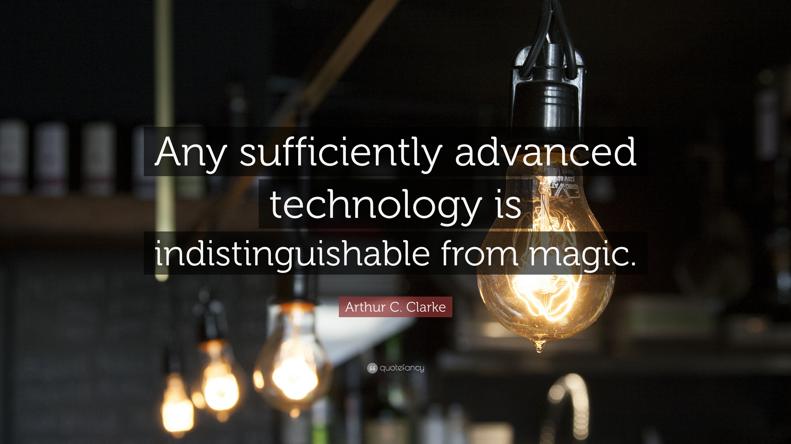

Hvor trenger magi for å bli ekte med teknologien?
Hva er triksene vi vil se bli virkelige av teknologi?
Magien til: Å produsere ny teknologi Å produsere miljøvennlig teknologi
Hvem kan produsere?
Ja, hvem kan skape, du kan produsere, vennene dine kan lage, familien og kollegene kan skape det. Hvert menneske med en interesse eller lidenskap kan skape. Å være interessert i noe som kan være starten på skapelsen av ny teknologi. Å ha en lidenskap for de tingene du gjør er nok.
Hva kan du skape?
Jeg nevner ordet “hva som helst”. Alt det betyr er uendelige muligheter for deg. Uendelige muligheter betyr at hvis du fikk en idé eller bare en interesse, vil du kunne skape noe betydelig. Lag noe vakkert, skap noe meningsfylt, skap en mulighet, skap en ny begynnelse. Vær en del av skaperne, skaperne av våre teknologier, skaperne av vår tid.
For å hjelpe, av teknologi
For å hjelpe mennesker
Hvem kan de hjelpe?
Dere alle kan hjelpe. Teknologi kan hjelpe. Du kan hjelpe, ved hjelp av teknologi. Teknologien vil etter hvert være nøkkelen til dette området.
Hvem skal hjelpe og hvor?
Mennesker, dyr og klima. I våre hjem, på jobbene våre og utenfor. Ute i jungelen, i skogen, i naturen.
Hvordan hjelpe?
Av teknologien selvfølgelig. Ved menneskelig engasjement. Ved samarbeid og kommunikasjon mellom lokalsamfunnene.
Å lære av teknologi
Å lære barn
Hvem kan lære?
Hver mann og kvinne kan lære. Hver gutt og jente kan lære. Undervisningen kan skje i alle aldre. Uansett hvor du kommer fra.
Hvem skal lære?
Fra barn til voksne. Kunnskap er her for å bli. Å bo i et av lokalsamfunnene våre, å bo med familiene våre, å lære den neste generasjon.
Hvordan høre og lære?
GÅ TIL SKOLEN. Eller les. Les om de tingene som betyr noe for deg, eller som har en betydning for de problemene som må løses.
Bli utdannet. Bli utdannet av skolen, av internett, av menneskene rundt deg, ved å følge interessene dine, finn din lidenskap.
Bli så utdannet at du får ideer til å forbedre skoler, forbedre utdanningsmetoder, forbedre hvordan du underviser.
Å bygge etter teknologi
Å bygge et bedre samfunn
Hvem kan bygge?
Regjeringer, organisasjoner, næringene. De med ressurser. De med ideer. De med engasjement. Med samarbeid.
Hva kan de bygge?
En bedre fremtid. En bedre nasjon. En bedre by. Og et bedre samfunn. En by med muligheter. En by med sysselsettinger og stabilitet.
Bygg sikkerhet, bygg utdanningssystemer, bygg en moderne infrastruktur som passer til en moderne by. Ved hjelp av teknologi skal man bli/være bevisst og forutsigbar.
Over har jeg skrevet noe jeg kaller tech-magic fordi det er et øyeblikk hvor tech er oppfunnet, og det første glimtet av det er magi.
